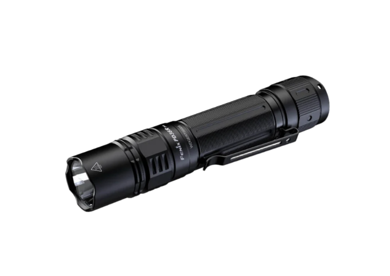
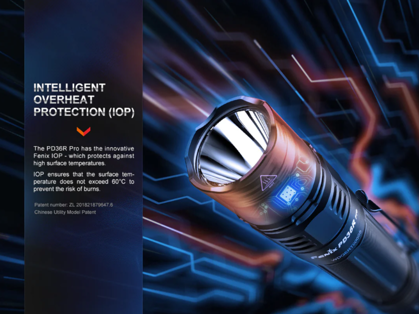
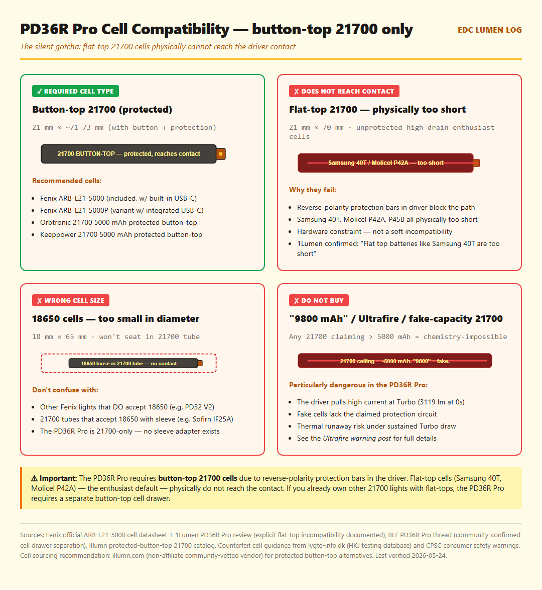
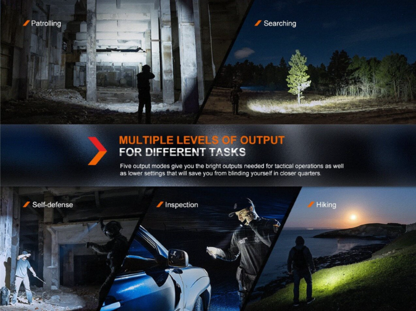
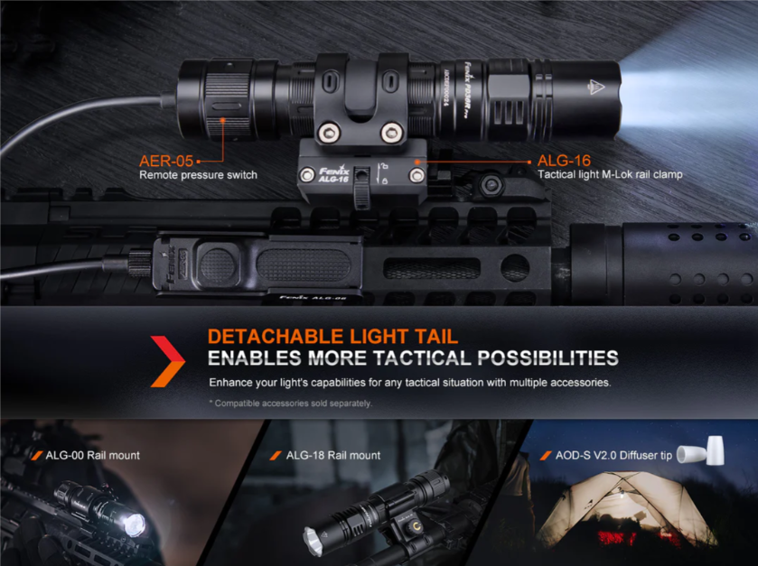
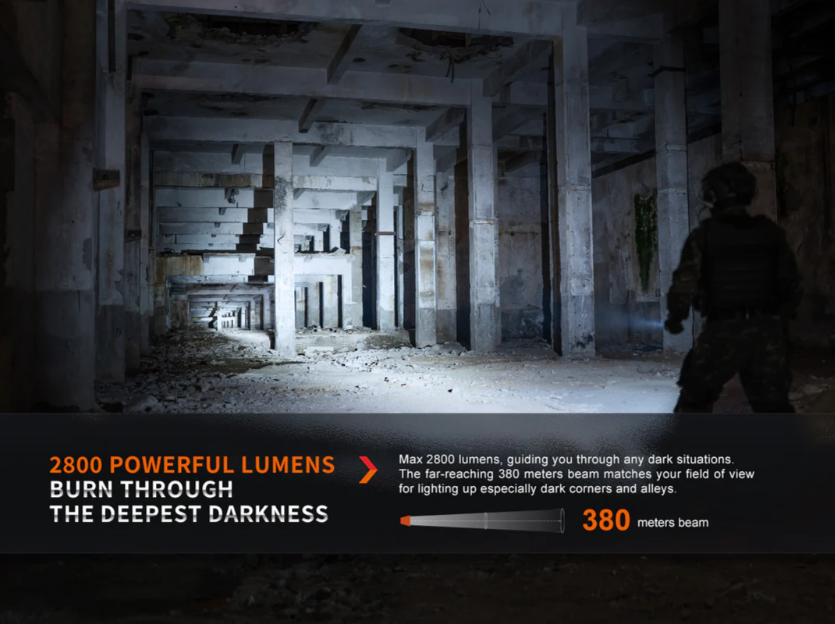

Fenix PD36R Pro Review — Buy It for High Mode, Not Turbo
The premium 21700 work-tool that gets the headline wrong — Turbo is a 30-second burst, but High mode is what makes this light worth the price.

Image: Fenix PD36R Pro manufacturer hero photo via Fenix official PD36R Pro product page. Cropped/sized for review use under fair-use review/commentary.
Affiliate disclosure: As an Amazon Associate I earn from qualifying purchases. The Buy links at the bottom of this review are Amazon product links — once the Amazon Associates application for this site is approved, an affiliate tag will be inserted into each link. This review is not sponsored.
TL;DR
Verdict: Premium 21700 work-tool light. Turbo is a 30-second burst, but High mode holds over 1000 lm regulated for 2+ hours — that's the actual selling point most reviews bury. IP68 sealing, included holster, dual-switch UI that non-enthusiasts adapt to immediately.
Best for: Construction, security, search-and-rescue work. Buyers who want sustained mid-tier output for hours rather than maximum lumens for seconds. Also a duty-grade gift for professionals who need a tool that just works.
Skip if: You already own flat-top 21700 cells (Samsung 40T, Molicel P42A) — they don't reach the contact and you'll need a separate button-top cell drawer. Also skip if you want Anduril 2 / moonlight mode / tail-stand / high-CRI tint.
What you need to buy together: Nothing — the Fenix ARB-L21-5000 (5000 mAh button-top protected 21700) is included, and it has its own built-in USB-C port for standalone charging. The body has a separate USB-C port too — two independent charging paths.
1Lumen measured 3119 lm at 0s, settling to 2494 lm at 30s — the burst over-delivers, then thermal regulation pulls it back. After 30 seconds, drops to ~900-1000 lm for sustained run.
Peak candela
36,600 cd
1Lumen: 34,200 cd measured. Throw 370 m vs 383 m claimed — within 3% variance.
Battery
1× 21700 button-top ONLY (Fenix ARB-L21-5000, 5000 mAh, protected)
Cell included with built-in USB-C charging port. Flat-top 21700 cells (Samsung 40T, Molicel P42A) physically do not reach the contact — this is a hardware constraint, not a soft incompatibility. If you own other 21700 lights with flat-tops, you'll need a separate button-top cell for this one.
IP rating
IP68
Higher than the IPX8 standard most EDC lights claim. IP68 tests dust ingress + 2 m submersion for 30 min — designed for duty/work conditions.
Weight
~139 g without cell / ~197 g with cell
Substantial. Not a shirt-pocket light — jacket, holster, or duty belt carry.
Length × diameter
147 mm × 27 mm head
Longer than budget 18650 lights. Holster included addresses the carry method.
Charging
USB-C, body-mounted (~11 W / 2.2 A at 5V)
Under 3 hours to full from empty. Plus: the included ARB-L21-5000 cell has its own USB-C port — two independent charging paths.
UI
Fenix proprietary (dual switch: Mode + Function)
Mode button cycles brightness, Function button accesses shortcuts. No direct Turbo shortcut — the Function button jumps to Strobe, not Turbo. Memory mode resets when tailcap is removed, charge completes, or USB power is disconnected while light is on.
Tint
6500K only (cool white)
No high-CRI or warm tint option. For indoor or color-critical work, this is the PD36R Pro's biggest limitation.
Tail stand
No
Protruding tail buttons prevent the light from standing upright. No bounce-lighting hands-free option.
Moonlight mode
No
Minimum output is not sub-lumen. For map reading or preserving night vision, this is a real gap.
Construction
A6061-T6 aluminum, Type III hard anodized, included holster
Premium build quality consistently praised in community reviews.
Price
Check current price at the regional Amazon links in the "Where to buy" section below
Per Amazon Associates Program policy, on-site pricing is sourced via Amazon's PA-API only — static prices are not displayed here.
Image: Fenix PD36R Pro official ANSI/PLATO FL1 technical parameters chart (Size, Weight, 6 output modes with runtime / distance / candela, IP68 rating) via Fenix official PD36R Pro product page. Cropped/sized for review use under fair-use review/commentary.

Image: Fenix PD36R Pro Intelligent Overheat Protection (IOP) feature marketing graphic (head close-up on circuit backdrop, IOP description, patent number ZL 201821879647.6) via Fenix official PD36R Pro product page. Cropped/sized for review use under fair-use review/commentary.

Site-generated infographic (HTML→PNG, EDC Lumen Log original). The PD36R Pro is a 21700 button-top-only light — flat-top cells (Samsung 40T, Molicel P42A) are physically too short to reach the contact due to reverse-polarity protection bars in the driver. If you already own flat-top 21700 lights, the PD36R Pro requires a separate button-top cell drawer. Avoid uncategorized "9800 mAh" cells — see the Ultrafire warning post. Cell-spec data sources: Fenix official ARB-L21-5000 datasheet + 1Lumen review confirming flat-top incompatibility + Illumn protected-button-top 21700 catalog.
4-axis rating
Build
5/5
Premium Type-III hard anodizing, A6061-T6 aluminum, IP68 sealing, included holster. Consistent community description: feels professionally engineered, not spec-chasing. One BLF report flagged anodizing wear after a few weeks — appears to be isolated rather than widespread.
Runtime
5/5
ANSI runtimes match spec closely: Turbo 3h 21min, High 3h 53min, Medium 7h 58min. The actual standout is High mode regulation — over 1000 lm held for 2+ hours flat, then graceful step-down. Rare quality of regulation at any price.
Pocketability
3/5
197 g with cell is hefty for pocket EDC. Holster is included, which is the carry method most users adopt. Front-pocket-jeans EDC is awkward; duty belt / jacket / bag carry is the design intent.
Value
4/5
Premium price reflects the IP68 build, included quality cell with built-in USB-C, included holster, and Fenix's brand reliability. Cell-flexibility-conscious buyers will balk at the button-top-only constraint. Work professionals will judge it well-priced.
High mode is best-in-class regulation: 1000+ lm held flat for 2+ hours is uncommon at this price. For sustained-task use — construction, search work, extended outdoor use — this is the real reason to buy this light. Most reviews bury the High-mode story behind the Turbo headline; the community knows better.
IP68 rather than IPX8: Dust ingress + 2 m water immersion tested. Higher real-world environmental tolerance than IPX8 (water-only) lights like the IF25A or FC13.
Complete kit, no fiddly setup: ARB-L21-5000 cell included with its own built-in USB-C port for standalone charging. Body has a separate USB-C port. Holster included. UI is immediately intuitive for non-enthusiasts.
Premium build quality genuinely earns the price: Type-III hard anodizing, A6061-T6 aluminum, tight tolerances, no machining defects across community reports. Feels engineered, not spec-stuffed.
✗ Where it falls short
Button-top-only 21700 is the silent gotcha: Driver reverse-polarity protection bars prevent flat-top cells from reaching contact. Samsung 40T, Molicel P42A, P45B — the enthusiast-default flat-tops — don't work. If you own other 21700 lights, you're now maintaining two cell drawers. Not disclosed prominently in Fenix marketing.
Turbo is a 30-second burst, not a sustained mode: BLF reviewer puts it plainly: "this comes at a cost, a very short burst, 30 seconds. The output will drop significantly to below 30% after 30 seconds from 2800 lumens." If you bought this expecting "2800 lm sustained," you'll be disappointed. If you bought it for High mode (which is where this light lives), you'll be delighted.
No direct Turbo shortcut + memory resets are unintuitive: Function button jumps to Strobe, not Turbo. Memory mode resets when tailcap is removed, charge completes, or USB power is disconnected while light is on. For a work tool, these UI quirks are friction points.
No moonlight, no tail-stand, no warm/high-CRI option: Minimum brightness is not sub-lumen — bad for map reading or preserving night vision. Protruding tail buttons prevent upright standing — bad for hands-free bounce lighting. 6500K cool white only — bad for indoor or color-critical use.

Image: Fenix PD36R Pro "Multiple Levels of Output for Different Tasks" 5-panel use-case composite (Patrolling, Searching, Self-defense, Inspection, Hiking) via Fenix official PD36R Pro product page. Cropped/sized for review use under fair-use review/commentary.
"High mode is where this light actually lives — over 1000 lm regulated flat for 2+ hours, IP68. That's a serious work-tool profile, and most reviews never get past the Turbo headline."

Image: Fenix PD36R Pro "Detachable Light Tail" tactical-accessories composite (AER-05 remote pressure switch, ALG-16 M-Lok rail clamp, ALG-00 / ALG-18 rail mounts, AOD-S V2.0 diffuser tip — sold separately) via Fenix official PD36R Pro product page. Cropped/sized for review use under fair-use review/commentary.
★ Community-tracked use report
📅 Long-term PD36R Pro patterns from 1Lumen, BLF, and CPF
Carry method: Community reports consistently use the included holster on belt carry. Front-pocket jeans carry is uncommon — the 197 g weight makes it impractical. Duty belt / tool belt / jacket carry is the design intent.
Cell compatibility friction: BLF threads document the flat-top incompatibility as the most common frustration point for owners who bought after already owning other 21700 lights. Multiple community members report keeping a "PD36R Pro drawer" of button-top protected cells separate from their flat-top enthusiast cells.
High mode runtime in practice: 1Lumen's ANSI measurement (3h 53min on High) is consistently reported as accurate in long-term community use. Workers using this light for shift-length tasks confirm 2+ hours of 1000+ lm sustained output before noticeable drop.
UI muscle memory: Community members coming from other lights mention the dual-switch arrangement takes a few days to internalize. The Function-button-to-Strobe instead of Turbo is a consistent point of "I keep doing this wrong" — but once learned, it's not a daily friction.
Build durability: No widespread reports of switch failure, port degradation, or driver failures. The single BLF anodizing-wear report appears isolated. Long-term reports skew positive on hardware reliability.
Compared to IF25A and E70 Mini: Community decision matrix is: IF25A for max-lumens floody + Anduril 2 + 95 CRI option (cheaper, more flexible cells); E70 Mini for compact 18650 + high-CRI Nichia 519A option (smaller); PD36R Pro for regulated High mode + IP68 + duty build. Three different tools for three different jobs.

Image: Fenix PD36R Pro tactical marketing photo (operator in dark concrete corridor with overlay text "2800 Powerful Lumens / Burn Through The Deepest Darkness / 380 meters beam") via Fenix official PD36R Pro product page. Cropped/sized for review use under fair-use review/commentary.
Verdict
The Fenix PD36R Pro is a work-tool that gets the headline wrong. Manufacturer marketing emphasizes the 2800 lm Turbo — but Turbo is a 30-second burst, not a sustained mode. The actual selling proposition is High mode: over 1000 lm regulated flat for 2+ hours, IP68 sealing, included holster, premium build. For construction, security, search work, or any sustained-task use where mid-tier brightness over hours matters more than peak lumens for seconds, this is the light. If you already own flat-top 21700 cells, factor in the cost of a separate button-top cell drawer. If you want Anduril 2 + max lumens + cell flexibility, get the Sofirn IF25A. If you want compact 18650 with high-CRI tint option, get the Acebeam E70 Mini.
🛒 Where to buy
If the verdict resonated and you want to pick one up, here are the regional Amazon product links. Choose your region. Once the Amazon Associates application for this site is approved, the URLs will be updated to include an affiliate tag.
🇺🇸 Check current price on Amazon.com (US)(Amazon search link — affiliate tag pending approval) Fenix ARB-L21-5000 button-top 21700 cell included (with built-in USB-C). Holster included.
Spare 21700 cells (button-top REQUIRED): Fenix ARB-L21-5000 (included; available as spare from Fenix), Fenix ARB-L21-5000P (variant with integrated USB-C), Orbtronic 21700 5000 mAh protected button-top, Keeppower 21700 5000 mAh protected button-top. Flat-top cells (Samsung 40T, Molicel P42A, P45B) do NOT work — the contact gap is physical, not a soft incompatibility. Do NOT use 18650 cells — physically won't fit. Avoid uncategorized "9800 mAh" cells — see the Ultrafire warning post.
Where to source protected button-top 21700 cells: Illumn stocks protected button-top 21700 cells from Orbtronic and Keeppower (non-affiliate link). Search "21700 protected button top" — verify button-top height before ordering.
Affiliate disclosure: The Amazon links above are currently non-affiliate search links. Once the Amazon Associates application for this site is approved, an affiliate tag will be inserted into each link. If/when you buy through an affiliate-tagged link, EDC Lumen Log earns a small commission at no extra cost to you. As an Amazon Associate I earn from qualifying purchases (statement preserved as required by Amazon Program Policies for the participation framework). Reviews are not paid or sponsored — see Methodology. (PR — 景品表示法準拠 / アフィリエイトタグは承認後に挿入)